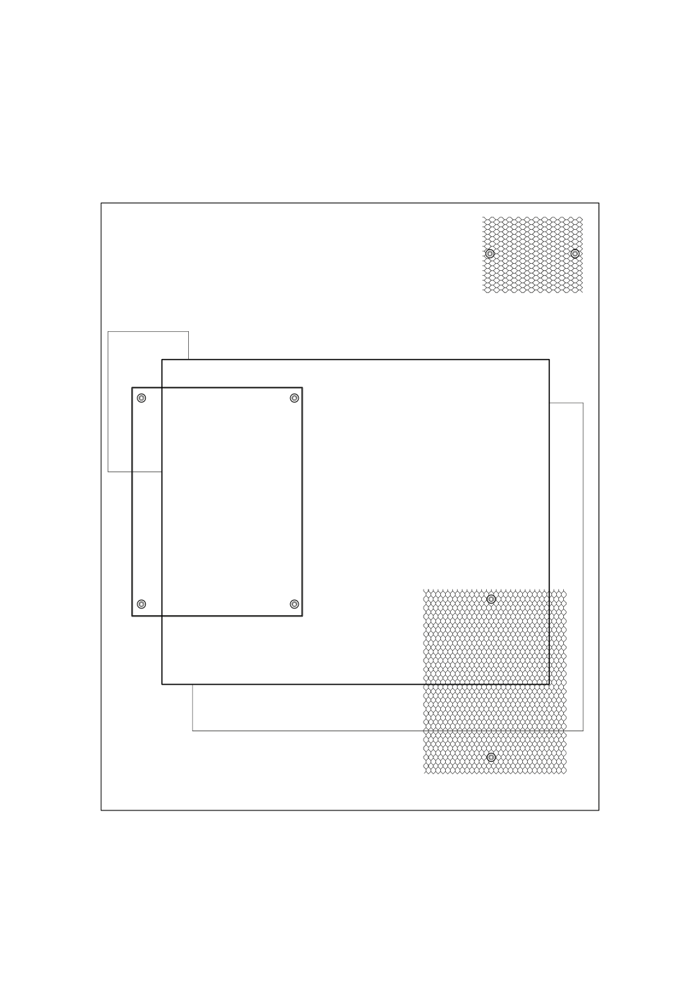

perhaps a new direction, a pivot to an unpredicted end whose tracks project to indistinction, their stygian contours eluding discernment in a course that promises neither pain nor pleasure nor advance nor regress but which glistens expectantly regardless, awaiting the blind investment of voyagers departing, anticipating a journey, or perhaps not,
perhaps only a resumption, in a return to where things once lay, their outlines strewn still and suspended, unchanged, unworn, enveloped by the flow of elapsing years whose current laps softly at the lip of familiarity, leaving remnants neither shifted nor aged but marooned upon islands of habit, each welcoming a visitors' return, to land as if nought had happened, as if home and ready to begin again, or perhaps not, 
perhaps merely another stride forward, an unconscious, unplanned footstep advancing along grooves worn deep, trudging through established furrows to progress the programme further, to sustain motion and reach a trajectory known, expected, yet vivid with proximity, its pocketed climax fresher upon nearness, spilling out to overwhelm, to engulf, or perhaps not,
perhaps only an ending, in an even cessation beyond which lurks nothing, neither the silent auditorium post-performance nor the blank screen denied power, not the lingering index of past experience, whose false negativity flourishes unchallenged, nor life’s apophatic other, greeted by pause, by absence, instead only the unevokable, unimaginable close that closes, a death, or perhaps not
...